iPhone 写真加工アプリ
選ぶだけで、写真が映画の色になる。
エモい写真にしたいのに、うまく加工できない。
POCKET COLOR は、プロの色づくりをワンタップに詰め込んだアプリです。
編集はぜんぶ無料 ／ 月額なし・広告なし・登録なし ／ iPhone・iPad（iOS 16以降）
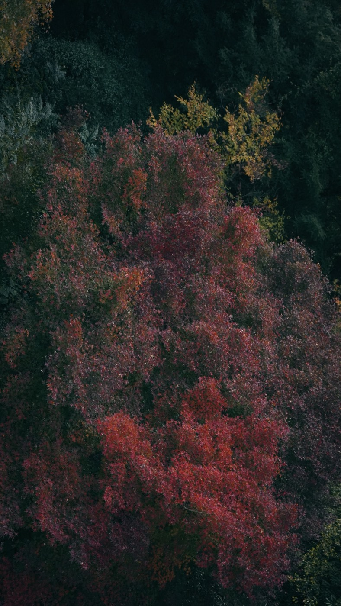
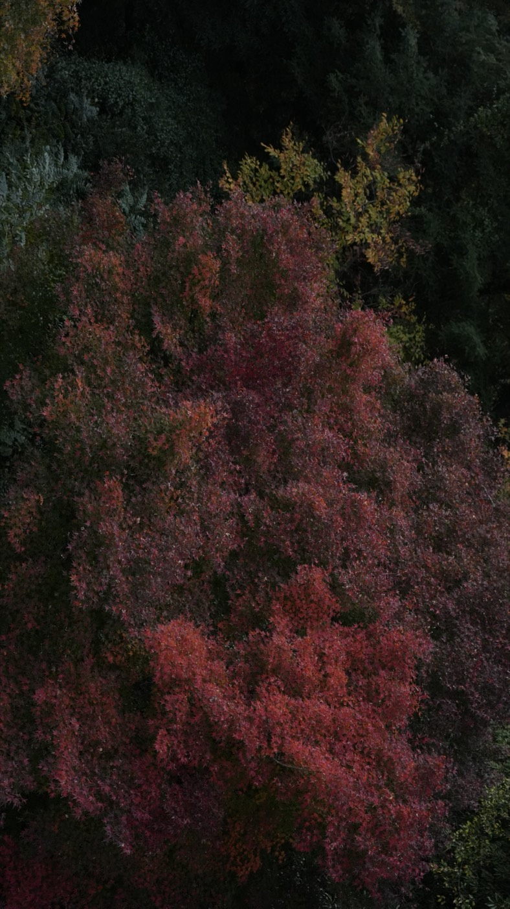
BEFOREAFTER同じ1枚。左右に動かして比べられます
Problem
明るくしても、彩度を上げても、なんか違う。
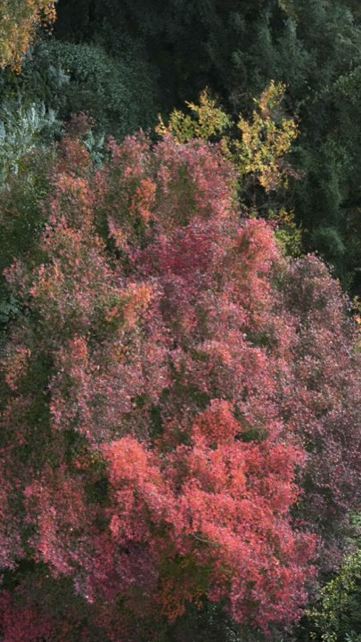
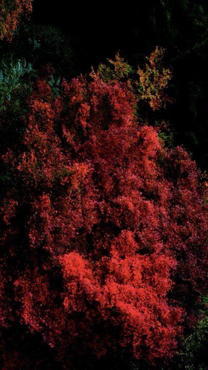
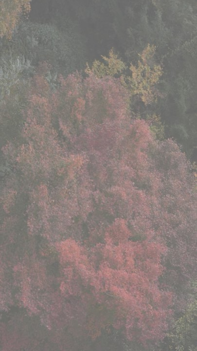
「あの色」の正体は、何十もの調整の積み重ね。影はほんのり青く、光はやわらかく粘る。トーンカーブ、影と光への色のせ、色ごとの色相、粒子、光のにじみ。知らないと、たどり着けません。
How it works
レシピを選ぶ。
それだけ。
ひとつのレシピに、トーン・色のせ・粒子・光のにじみまでが一式。効き具合のつまみひとつで、ほんのり香らせることも、思いきり振ることもできます。
↑ タップして試せます（アプリの実際の現像結果）
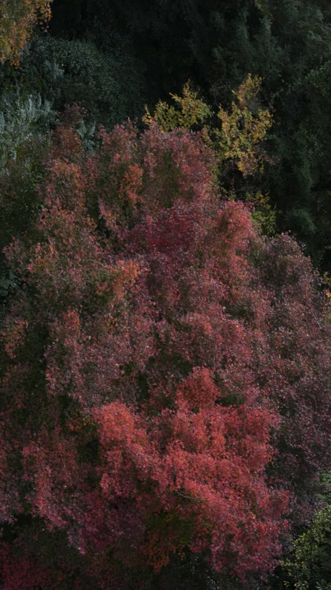
なしまだ何も当てていない写真
Pro tools
仕上げは、プロと同じ道具で。
レシピの上から、いつも通りに追い込めます。道具は、すべて無料です。
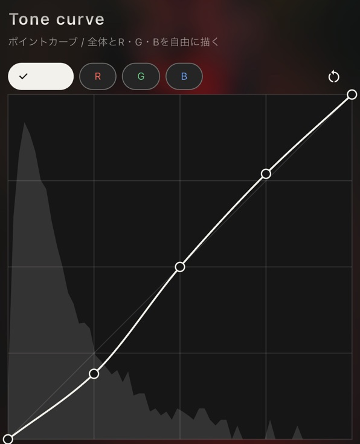
トーンカーブ階調は、指で描く。RGBと各色のポイントカーブ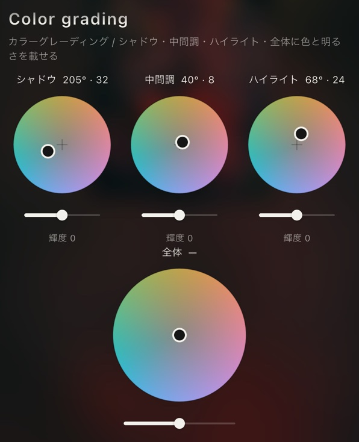
カラーホイール影は青く、光は暖かく。4つのホイールで色をのせる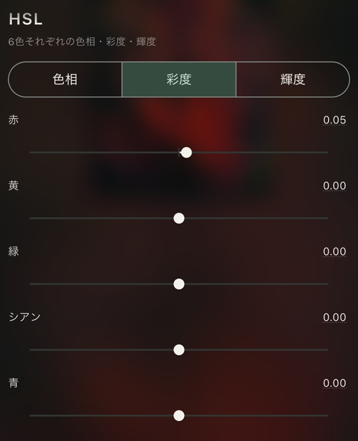
HSL色ごとに、色相・彩度・輝度を動かす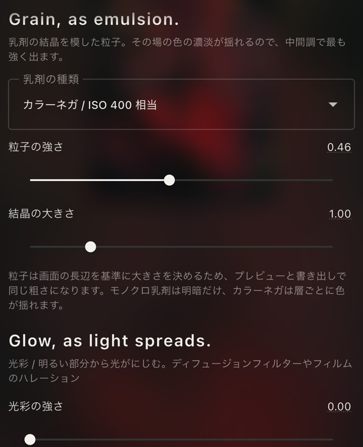
フィルム粒子粒子は、色そのものを揺らす。乳剤は5種類ほかにも：マスクで部分補正 ／ RAW現像 ／ 自分の3D LUT（.cube） ／ 多重露光 ／ 動画も同じ色で
Camera
撮る前から、もう仕上がりの色。
- 編集データを、そのままカメラへ作った色・比率・背景を当てた画面を見ながら撮影。画面に出ている絵が、そのまま保存されます。写真も動画も。
- スマホで、RAWが撮れるセンサーのデータをRAW（DNG）で記録。撮ったあとも、白飛びぎわまで粘って追い込めます。※ ProRAW対応機種はProRAW、それ以外は広角1×のRAWで保存します
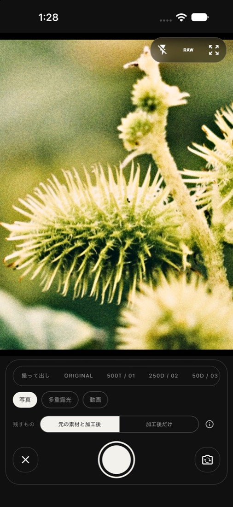
Price
編集は、ぜんぶ無料。
¥500
課金は、買い切りの1回だけ。
無料のまま
¥0- 編集・プレビューは制限なし
- 12のレシピ、プロの道具、撮影もすべて
- 書き出しは長辺2048px・品質30%まで
元の画質での書き出し
¥500買い切り- 写真も動画も、素材と同じ画素数で保存
- 最大4倍のアップスケール
- 追加料金なし。機種変更後も復元できます
- 月額なし
- 広告なし
- アカウント登録なし
Private
写真は、どこにも送られない。
すべて端末の中で読み込みから書き出しまで、iPhoneとiPadの中だけで完結します。
登録もログインもなし入れたらすぐ使えます。利用者の情報は集めません。
元の写真はそのまま元のファイルは書き換えず、編集は自動で保存されます。